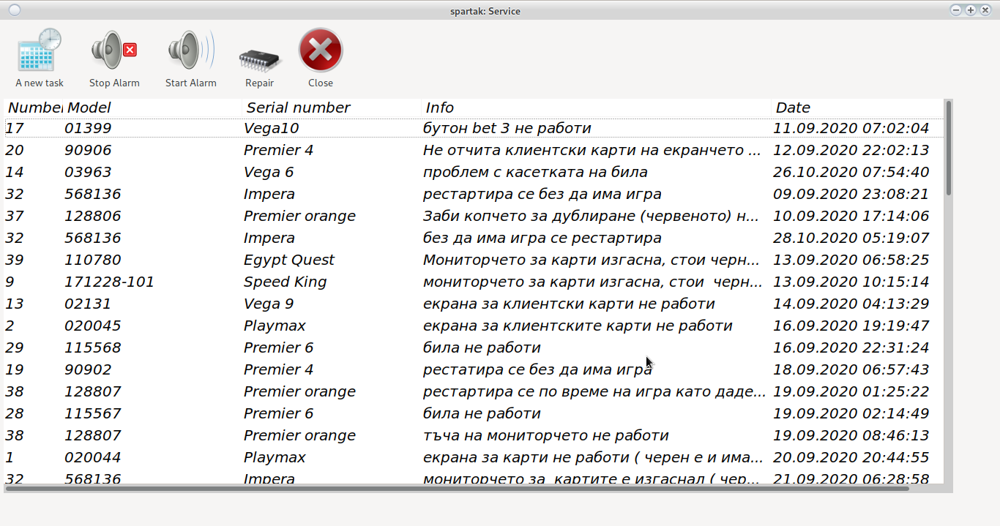
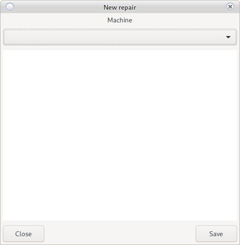
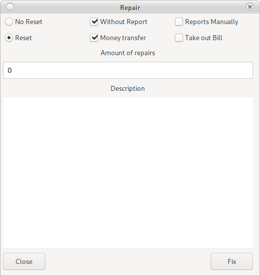

Service
Home screen for module Service
This is a service module. Used for serial machines. Always technique to know what to do and where.

Read/Edit Task
Double-clicking on the task will open the possibility for Reading, Editing or Writing.

We recommend writing, not editing tasks.
New Task
In case you have rights you can submit a new task without choosing a machine:
Example: Mount a TV
The croupiers can submit repairs to the service only for a certain machine. View Here
Stop Alarm
The beeping of the machine will stop.
Play Alarm
It will let the machine scream.
Repair
Machine Repair (Task)
A window is loading

There are two options
-
No reset
Enter the number of repairs.
I bought a cable for BGN 20 or an EGT button for BGN 12.
The performed repair is described and the selected order disappears from active tasks. -
With reset
Due to a technical problem, the machine needs to be reset From here, the reset methods can be divided into options:
-
Without accounting machine
The machine will be reset in the system without reporting. You must be clear about what you are doing.
-
Reports by mechanical counters or by hand by electronic
SMIB The controller does not work or the machine does not work
You can read it manually by electronic counters or by mechanics. * Take out BillDid we poison the cartridge on the ridge to get the money out of the machine?
-
Transfer
By default, all money from the machine will be credited to equipment
When transferring, he will ask for a choice of croupier and confirmation from the croupier
After confirmation, the money will be transferred from the cash register to the cashier's office.
-